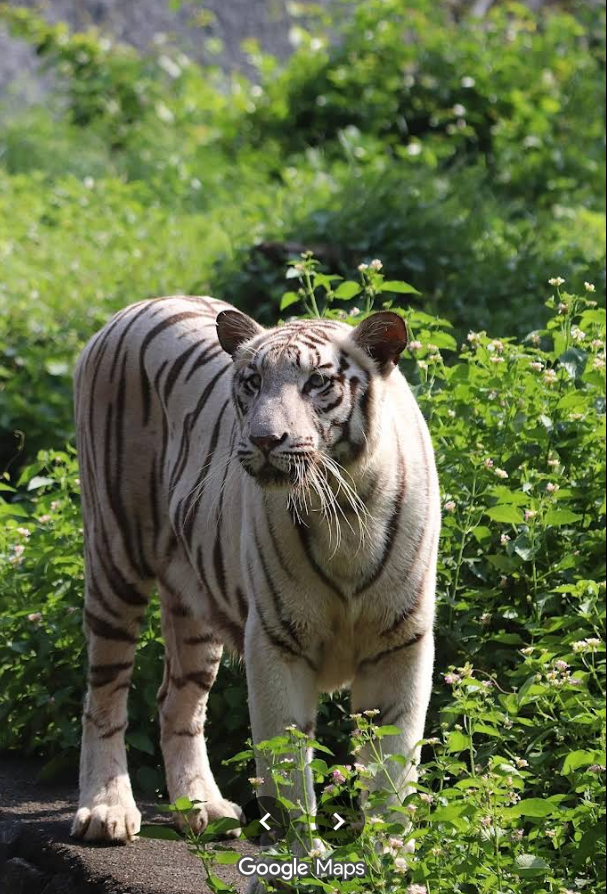

White Tiger
The White Tiger is a rare color variant of the Bengal Tiger, known for its stunning white coat with black stripes and piercing blue eyes. They are not a separate species but a genetic variation of tigers, found mostly in captivity. White Tigers symbolize strength, beauty, and rarity, making them a star attraction in zoological parks.
🐅 Scientific Name: Panthera tigris tigris
🌍 Origin: Native to India (Bengal Tiger population)
🎯 Unique Feature: White coat caused by a recessive gene
🔎 Conservation Status: Endangered (due to habitat loss & poaching)